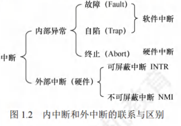
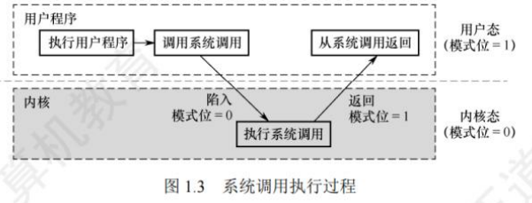

1-2运行环境
运行环境
[toc]
处理器运行模式
-
在计算机系统中，通常 CPU 执行两种不同性质的程序：
-
操作系统内核程序
-
用户自编程序(系统外层的应用程序，简称应用程序)
-
前者是后者的管理者，因此内核程序要执行一些特权指令，而用户自编程序出于安全考虑不能执行这些特权指令。
-
-
特权指令和非特权指令的特点：
-
特权指令，是指不允许用户直接使用的指令，如I/O指令、关中断指令、内存清零指令，存取用于内存保护的寄存器、送PSW到程序状态字寄存器等的指令。
-
非特权指令，是指允许用户直接使用的指令，它不能直接访问系统中的软硬件资源，仅限于访问用户的地址空间，为了防止用户程序对系统造成破坏。
-
-
具体实现
- 将 CPU 的运行模式划分为用户态(目态)和核心态(又称管态、内核态)。
- CPU处于核心态时，CPU可以执行特权指令，切换到用户态的指令也是特权指令。CPU处于用户态时，CPU只能执行非特权指令。
- 应用程序运行在用户态，操作系统内核程序运行在核心态。
- 应用程序向操作系统请求服务时通过使用访管指令，访管指令是在用户态执行的，因此是非特权指令。
-
操作系统的内核
-
现代操作系统，几乎都是分层式的结构。操作系统的各项功能分别被设置在不同的层次上。与硬件关联较紧密的模块，如时钟管理、中断处理、设备驱动等处于最低层。其次是运行频率较高的程序，如进程管理、存储器管理和设备管理等。
-
这部分内容的指令运行在核心态。内核是计算机上配置的底层软件，它管理着系统的各种资源。
-
内核包括4方面的内容：时钟管理，中断机制，原语，系统控制的数据结构及处理。核心态指令实际上包括系统调用类指令和一些针对时钟、中断和原语的操作指令。
-
时钟管理
在计算机的各种部件中，时钟是关键设备。
- 时钟的功能
- 计时，操作系统需要通过时钟管理，向用户提供标准的系统时间。
- 通过时钟中断的管理，可以实现进程的切换。
中断机制
引入中断技术的初衷是提高多道程序运行时的CPU利用率，使CPU可以在I/O操作期间执行其他指令。
中断机制中，只有一小部分功能属于内核，它们负责保护和恢复中断现场的信息，转移控制权到相关的处理程序。减少中断的处理时间，提高系统的并行处理能力。
原语
操作系统的底层是一些可被调用的公用小程序，它们各自完成一个规定的操作，将具有这些特点的程序称为原语(Atomic Operation)。
- 特点
- 处于操作系统的底层，是最接近硬件的部分。
- 这些程序的运行具有原子性，其操作只能一气呵成(出于系统安全性和便于管理考虑)。
- 这些程序的运行时间都较短，而且调用频繁。定义原语的直接方法是关中断，让其所有动作不可分割地完成后再打开中断。系统中的设备驱动、CPU切换、进程通信等功能中的部分操作都可定义为原语，使它们成为内核的组成部分。
系统控制的数据结构及处理
系统中用来登记状态信息的数据结构很多，如作业控制块、进程控制块(PCB)、设备控制块、各类链表、消息队列、缓冲区、空闲区登记表、内存分配表等。
- 基本操作
- 进程管理。进程状态管理、进程调度和分派、创建与撤销进程控制块等。
- 存储器管理。存储器的空间分配和回收、内存信息保护程序、代码对换程序等。
- 设备管理。缓冲区管理、设备分配和回收等。
中断和异常
在操作系统中引入核心态和用户态这两种工作状态后，需要考虑这两种状态之间如何切换。
操作系统内核工作在核心态，而用户程序工作在用户态。系统不允许用户程序实现核心态的功能，而它们又必须使用这些功能。因此，需要在核心态建立一些“门”，以便实现从用户态进入核心态。
在实际操作系统中，CPU运行用户程序时唯一能进入这些“门”的途径是通过中断或异常。发生中断或异常时，运行用户态的CPU会立即进入核心态，这是通过硬件实现的。
中断和异常的定义
中断(Interruption)也称外中断，是指来自CPU执行指令外部的事件。
-
意义
- 操作系统的发展过程大体上就是一个想方设法不断提高资源利用率的过程，而提高资源利用率就需要在程序并未使用某种资源时，将它对那种资源的占有权释放，而这一行为就需要通过中断实现。
-
常见的中断
- 通常用于信息I/O
- 时钟中断，表示一个固定的时间片已到，让处理机处理计时、启动定时运行的任务等
异常(Exception)也称内中断，是指来自CPU执行指令内部的事件，如程序的非法操作码、地址越界、运算溢出、虚存系统的缺页及专门的陷入指令等引起的事件。异常不能被屏蔽，一旦出现，就应立即处理。

中断和异常的分类
-
外中断可分为可屏蔽中断和不可屏蔽中断。
-
可屏蔽中断：是指通过INTR线发出的中断请求，通过改变屏蔽字可以实现多重中断，从而使得中断处理更加灵活。
-
不可屏蔽中断：是指通过NMI线发出的中断请求，通常是紧急的硬件故障，如电源掉电等。
-
-
异常也是不能被屏蔽的。异常可分为故障、自陷和终止。
-
故障(Fault)：由指令执行引起的异常，如非法操作码、缺页故障、除数为0、运算溢出等。
-
自陷(Trap，又称陷入)：是一种事先安排的“异常”事件，用于在用户态下调用操作系统内核程序，如条件陷阱指令、系统调用指令等。
-
终止(Abort)：是指出现了使得CPU无法继续执行的硬件故障，如控制器出错、存储器校验错等。故障异常和自陷异常属于软件中断(程序性异常)，终止异常和外部中断属于硬件中断。
-
中断和异常的处理过程
当CPU在执行用户程序的第i条指令时检测到一个异常事件，或在执行第i条指令后发现一个中断请求信号，则CPU打断当前的用户程序，然后转到相应的中断或异常处理程序去执行。
若中断或异常处理程序能够解决相应的问题，则在中断或异常处理程序的最后，CPU通过执行中断或异常返回指令，回到被打断的用户程序的第i条指令或第i+1条指令继续执行；
若中断或异常处理程序发现是不可恢复的致命错误，则终止用户程序。通常情况下，对中断和异常的具体处理过程由操作系统(和驱动程序)完成。
区分中断处理和子程序调用
- 中断处理程序与被中断的当前程序是相互独立的，它们之间没有确定的关系；子程序与主程序是同一程序的两部分，它们属于主从关系。
- 通常中断的产生都是随机的；而子程序调用是通过调用指令(CALL)引起的，是由程序设计者事先安排的。
- 调用子程序的过程完全属于软件处理过程；而中断处理的过程还需要有专门的硬件电路才能实现。
- 中断处理程序的入口地址可由硬件向量法产生向量地址，再由向量地址找到入口地址；子程序的入口地址是由CALL指令中的地址码给出的。
- 调用中断处理程序和子程序都需要保护程序计数器(PC)的内容，前者由中断隐指令完成，后者由CALL指令完成(执行CALL指令时，处理器先将当前的PC值压入栈，再将PC设置为被调用子程序的入口地址)。
- 响应中断时，需对同时检测到的多个中断请求进行裁决，而调用子程序时没有这种操作。
系统调用
指用户在程序中调用操作系统所提供的一些子功能，它可被视为特殊的公共子程序。
系统中的各种共享资源都由操作系统统一掌管，因此在用户程序中，凡是与资源有关的操作(如存储分配、I/O传输及管理文件等)，都必须通过系统调用方式向操作系统提出服务请求，并由操作系统代为完成。
一个操作系统提供的系统调用命令有几十条乃至上百条之多，每个系统调用都有唯一的系统调用号。
系统调用的分类
- 设备管理。完成设备的请求或释放，以及设备启动等功能。
- 文件管理。完成文件的读、写、创建及删除等功能。
- 进程控制。完成进程的创建、撤销、阻塞及唤醒等功能。
- 进程通信。完成进程之间的消息传递或信号传递等功能。
- 内存管理。完成内存的分配、回收以及获取作业占用内存区大小和起始地址等功能。
系统调用相关功能涉及系统资源管理、进程管理等的操作，对整个系统的影响非常大，因此系统调用的处理需要由操作系统内核程序负责完成，要运行在核心态。
系统调用的处理过程
- 用户程序首先将系统调用号和所需的参数压入堆栈；接着，调用实际的调用指令，然后执行一个陷入指令，将CPU状态从用户态转为核心态，再后由硬件和操作系统内核程序保护被中断进程的现场，将程序计数器(PC)、程序状态字(PSW)及通用寄存器内容等压入堆栈。
- 分析系统调用类型，转入相应的系统调用处理子程序。在系统中配置了一张系统调用入口表，表中的每个表项都对应一个系统调用，根据系统调用号可以找到该系统调用处理子程序的入口地址。
- 在系统调用处理子程序执行结束后，恢复被中断的或设置新进程的CPU现场，然后返回被中断进程或新进程，继续往下执行。
可以这么理解，用户程序执行"陷入指令”，相当于将CPU的使用权主动交给操作系统内核程序(CPU状态会从用户态进入核心态)，之后操作系统内核程序再对系统调用请求做出相应处理。处理完成后，操作系统内核程序又会将CPU的使用权还给用户程序(CPU状态会从核心态回到用户态)。
- 设计目的
- 用户程序不能直接执行对系统影响非常大的操作，必须通过系统调用的方式请求操作系统代为执行，以便保证系统的稳定性和安全性。
操作系统的运行环境
用户通过操作系统运行上层程序(如系统提供的命令解释程序或用户自编程序)，而这个上层程序的运行依赖于操作系统的底层管理程序提供服务支持，当需要管理程序服务时，系统则通过硬件中断机制进入核心态，运行管理程序；
程序运行出现异常情况，被动地需要管理程序的服务，这时就通过异常处理来进入核心态。管理程序运行结束时，用户程序需要继续运行，此时通过相应的保存的程序现场退出中断处理程序或异常处理程序，返回断点处继续执行。

由用户态转向核心态的例子
- 用户程序要求操作系统的服务，即系统调用。
- 发生一次中断。
- 用户程序中产生了一个错误状态。
- 用户程序中企图执行一条特权指令。从核心态转向用户态由一条指令实现，这条指令也是特权命令，一般是中断返回指令。